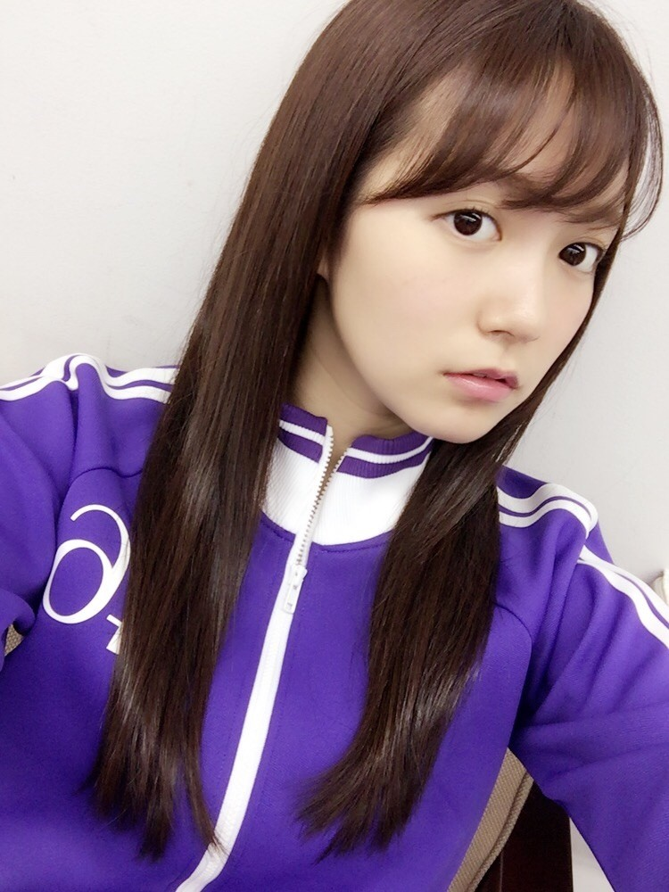
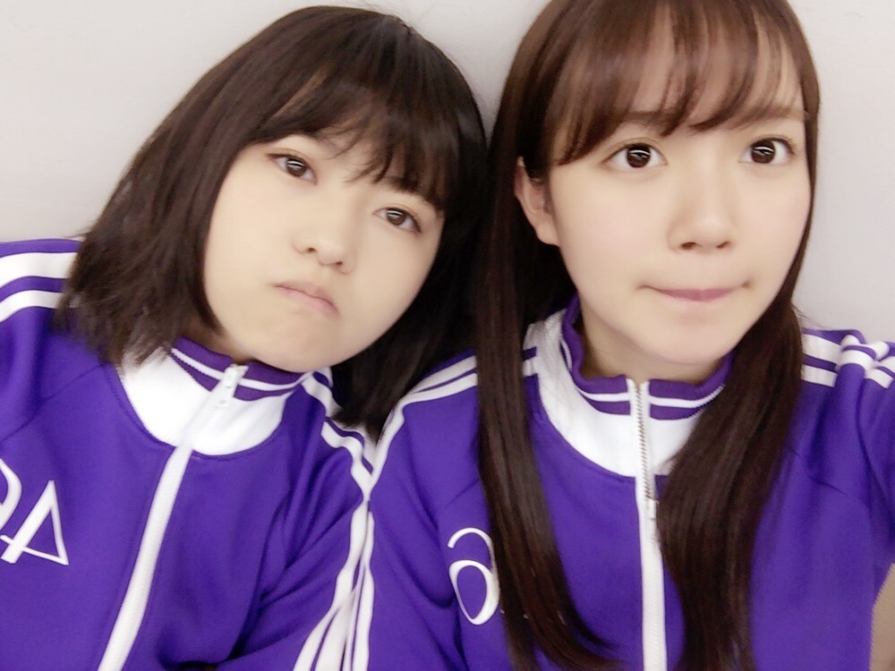

| 2017/06 01 Thu | ひめたん-0o0-その712 |

ジャージで失礼します、中元です。
乃木坂工事中の収録に
久々に参加しました！
告知逃しましたが
NOGIBINGO!8にも出ました。
今クール、あともう一回出ます～
最近蘭世とごはんしました！
将来のこととか、最近のこととか、
自分自身のこととか、色々お話しました
彼女の人柄の通り
熱い会になりましたね。
でもなんかほっこりしました。
ありのままで話せる後輩がいるって
いいな～っていうか、もはや後輩の枠を
超えて大切な仲間だなって。
私は危なっかしいと
いつも彼女に言われます。笑
見てて不安になるらしい。わかります。
日曜の夜は、らじらー！サンデー
次回のゲストは伊藤万理華ちゃんです。
メールの宛先はこちら
生放送中に #nhkらじらー をつけて
ツイッターで呟くと
スタジオメンバーに届きますよ(^0^)～

まりかちゃんかわええ
～お知らせ～
雑誌
6/6 漫画アクション
6/6 TopYell 7月号
6/9 月刊Newtype 7月号
6/15 EX大衆 7月号
LIVE
7/1～ 乃木坂46真夏の全国ツアー2017
リリース
6/28 4th YEAR BIRTHDAY LIVE
2016.8.28－30 JINGU STADIUM

ライブ映像わーい！
個人的には「君僕」「不等号」を
やはり観てほしいっっ
センターだからってだけじゃないけど
思い入れが強すぎて強すぎて。
私が出演したライブの中で
4thBDLは三本の指に入るくらい
いや～～シビれました。
(＊´・ω・＊)
コメント(458)
2017/06/01 21:30